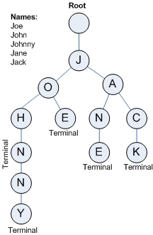

<mat-grid-list cols="4">
  <mat-grid-tile
      *ngFor="let tile of tiles"
      [colspan]="tile.cols"
      [rowspan]="tile.rows"
      [style.background]="tile.color">
    
      <mat-card class="example-card-one" *ngIf="tile.id == 1">
        <mat-card-header>
          <mat-card-title>
           <h3>
              Trie
           </h3>
          </mat-card-title>
          <mat-card-subtitle>Data structure</mat-card-subtitle>
        </mat-card-header>  
        <mat-card-content>
          <h4 class="desc">
            Trie is an efficient information reTrieval data structure. Using Trie, search complexities can be brought to optimal limit (key length). If we store keys in binary search tree, a well balanced BST will need time proportional to M * log N, where M is maximum string length and N is number of keys in tree. Using Trie, we can search the key in O(M) time. However the penalty is on Trie storage requirements
          </h4>
        </mat-card-content>
        <mat-card-actions class="text-center">
          <button mat-stroked-button (click)="goToSearch()">Search ...</button>          
        </mat-card-actions>
      </mat-card>      
      
      <mat-card class="example-card" *ngIf="tile.id == 2">         
        <mat-card-content>
          
          <p class="text-center">Trie structure</p>
        </mat-card-content>        
      </mat-card>

      <mat-card class="example-card" *ngIf="tile.id == 3">        
        <mat-card-content>
          <h4 class="text-desc">
              Trie memory for computer searching was first recommended by René de la Briandais. He pointed out that we can save memory space at the expense of running time if we use a linked list for each node vector, since most of the entries in the vectors tend to be empty.
          </h4>
        </mat-card-content>        
      </mat-card>

      <mat-card class="example-card-four" *ngIf="tile.id == 4">        
        <mat-card-content>          
          <mat-list>
            <h3>Operations</h3>
            <mat-list-item class="list-item"> 1. Insert </mat-list-item>
            <mat-list-item class="list-item"> 2. Search </mat-list-item>                
          </mat-list>

          <h4 class="desc">Insert and search costs O(key_length), however the memory requirements of Trie is O(ALPHABET_SIZE * key_length * N) where N is number of keys in Trie. There are efficient representation of trie nodes (e.g. compressed trie, ternary search tree, etc.) to minimize memory requirements of trie.</h4>
        </mat-card-content>        
      </mat-card>
  </mat-grid-tile>
</mat-grid-list>